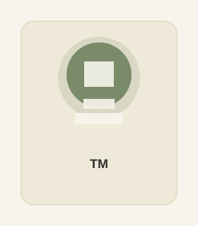

ERP subutilizado o mal implementado
Pagás un sistema de gestión robusto pero el equipo termina trabajando por afuera en planillas paralelas porque la configuración no refleja cómo opera el negocio.
Somos el puente entre el negocio y la tecnología para empresas medianas de distribución, agro y retail. Antes de tocar un sistema o automatizar una planilla, entendemos cómo funciona tu operación en la calle, el depósito y la administración.
Muchas empresas invierten en licencias o suman gente a cargar datos, pero el cuello de botella sigue intacto porque el circuito operativo está roto.
Pagás un sistema de gestión robusto pero el equipo termina trabajando por afuera en planillas paralelas porque la configuración no refleja cómo opera el negocio.
La operación depende de la memoria de dos o tres personas clave. Si alguien falta o cambia de puesto, se frena la facturación o se cometen errores caros.
Horas perdidas cruzando archivos de ventas, stock y costos a mano para armar un cierre mensual que, cuando está listo, ya es viejo para tomar decisiones.
Diferencias constantes entre el stock físico y el sistema, pedidos preparados a ciegas o recursos consumidos en operaciones externas sin control de costos.
No vendemos licencias ni enlatados. Nos sentamos de tu lado de la mesa para diseñar, implementar y estabilizar la solución que tu estructura necesita.
Acompañamos desde la selección de la herramienta y el relevamiento funcional hasta la migración de datos maestros, pruebas, salida en vivo y capacitación. Si tenés una implementación trabada, auditamos el estado actual y reencauzamos el proyecto.
Ordenamos el flujo físico y sistémico del depósito: recepción, ubicaciones, picking, control de despacho e inventario cíclico. Conectamos el movimiento real de mercadería con la administración y los canales de venta física y digital.
Eliminamos la doble carga y el trabajo manual repetitivo. Construimos circuitos automáticos de captura, limpieza y cruce de datos usando desde Python, SQL y BigQuery hasta herramientas accesibles como Google Sheets y Forms cuando la operación lo pide.
El proyecto no termina el día que se instala el sistema. Brindamos soporte funcional post-implementación, resolución de incidencias operativas, capacitación a nuevos usuarios y ajustes evolutivos para que tu equipo sea autónomo.
Cada intervención sigue una secuencia estructurada que asegura que el equipo adopte la herramienta y no dependa eternamente de la consultora.
Alcance, entregables, plazos y presupuesto definidos de antemano, incluyendo siempre una etapa de estabilización post-salida en vivo.
Acompañamiento continuo con dedicación mensual fija para evolucionar procesos, dar soporte funcional L1/L2 y auditar indicadores.
Bolsa de horas consumibles a demanda para ajustes puntuales, reportes específicos, capacitaciones a nuevos ingresos o consultas técnicas.
Soluciones reales implementadas en operaciones con desafíos concretos de trazabilidad, gestión y volumen de datos.
"[COMPLETAR: Testimonio opcional del cliente sobre la claridad para calcular presupuestos reales]"Ver caso completo →
"[COMPLETAR: Testimonio opcional del cliente]"Ver estructura del caso →
"[COMPLETAR: Testimonio opcional del cliente]"Ver estructura del caso →
Elegimos la tecnología según la madurez y el presupuesto de tu operación: desde ERPs corporativos y motores de bases de datos hasta planillas conectadas.

[COMPLETAR: Reemplazar por foto real de Tomás Monserrat]Consultor Senior de Procesos, ERP/WMS y Automatización
Con más de 8 años de experiencia implementando, integrando y rescatando sistemas de gestión, creé TM Consultoría con una premisa clara: ningún software resuelve un proceso que no se entiende primero en el piso de trabajo.
Lidero personalmente el diagnóstico, la arquitectura de procesos y el seguimiento de cada cliente para garantizar que no haya teléfonos descompuestos entre la necesidad del negocio y la configuración técnica. Cuando la envergadura del proyecto requiere desarrollo específico o dedicación adicional, sumo especialistas de confianza de mi red profesional bajo mi dirección metodológica.
Antes de hablar de presupuestos o herramientas, tengamos una sesión de diagnóstico para entender dónde se está perdiendo tiempo o control en tu operación.